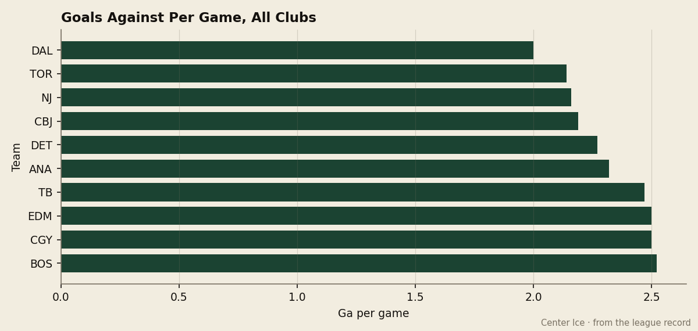
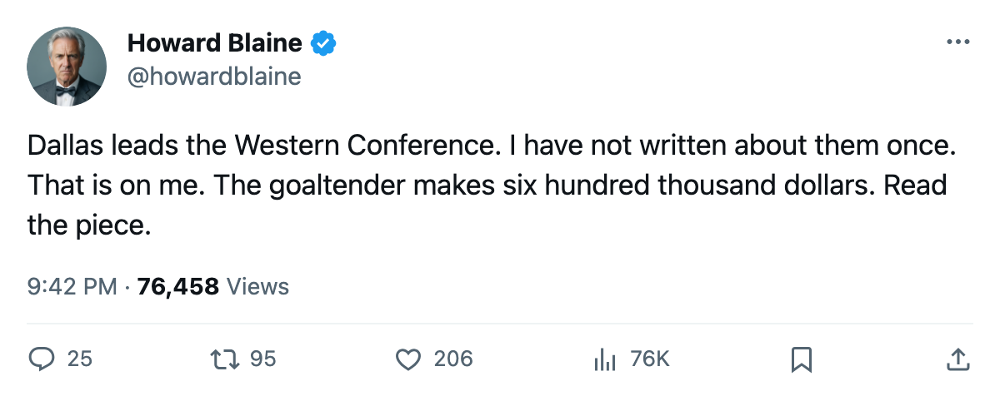
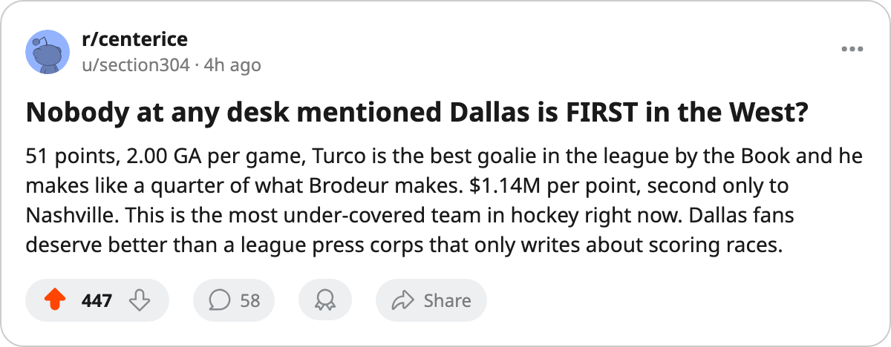

First in the West, Silent in the Papers: Dallas Allows 2.00 a Night and Its Goaltender Makes $600,000
The Stars lead the Western Conference with 51 points, the fewest goals against in hockey, and the second-best payroll value in the league, and no desk has written a word about them all season.
 Howard BlaineSenior writer, The Blaine Rankings · The Hockey Gazette
Howard BlaineSenior writer, The Blaine Rankings · The Hockey Gazette
The  Dallas Stars lead the Western Conference. They have done it by allowing the fewest goals in the league, 72 in 36 games, which is 2.00 a night. Their goaltender makes $600,000. His name is
Dallas Stars lead the Western Conference. They have done it by allowing the fewest goals in the league, 72 in 36 games, which is 2.00 a night. Their goaltender makes $600,000. His name is  Marty Turco97, he is 30 years old, he was the 124th player chosen in the 1994 entry draft, and his Book grade of 97 is the highest in hockey among goaltenders with 5 or more games.
Marty Turco97, he is 30 years old, he was the 124th player chosen in the 1994 entry draft, and his Book grade of 97 is the highest in hockey among goaltenders with 5 or more games.
The standings put Dallas at 51 points on $58.02M in payroll, which is $1.14M a point. Only  Nashville Predators ($1.06M a point) is cheaper in the league. Dallas has done it with the league's lowest goals-against average, a regulation record of 20 and 8, and a goaltender on the seventh-cheapest contract of any player who has dressed for 25 or more games this season.
Nashville Predators ($1.06M a point) is cheaper in the league. Dallas has done it with the league's lowest goals-against average, a regulation record of 20 and 8, and a goaltender on the seventh-cheapest contract of any player who has dressed for 25 or more games this season.
This is not a small story. The Stars are the only club in the Western Conference above 50 points. They are 6 and 2 and 0 in the Pacific division, outscoring divisional opponents 18 to 13. They are 12 and 9 on the road, which is better than any club in the Northwest except  Calgary Flames. And yet across every desk in this league, Dallas has appeared in coverage exactly zero times as of this morning.
Calgary Flames. And yet across every desk in this league, Dallas has appeared in coverage exactly zero times as of this morning.

The goaltender is the argument
Turco has played 28 games and won 19. His goals-against average is 1.76, his save percentage is .911. He has 1 shutout. His contract carries $600,000 a year and no years left, which means he is an unrestricted free agent at the end of this season unless Dallas re-signs him.
The gap between his salary and his production is the largest in hockey among goaltenders with 20 or more games.  Martin Brodeur93 of
Martin Brodeur93 of  New Jersey Devils has one more win (20) and a GAA of 1.82 on a contract worth far more.
New Jersey Devils has one more win (20) and a GAA of 1.82 on a contract worth far more.  Jean-Sebastien Giguere93 of
Jean-Sebastien Giguere93 of  Mighty Ducks of Anaheim won the Vezina last spring and carries a grade of 97, the same as Turco, but has 14 wins in 26 games. Turco leads all goaltenders in the Book. No other goaltender at his level of production costs this little.
Mighty Ducks of Anaheim won the Vezina last spring and carries a grade of 97, the same as Turco, but has 14 wins in 26 games. Turco leads all goaltenders in the Book. No other goaltender at his level of production costs this little.
Through 36 games, $58.02M has been enough to build around a 97-rated goaltender making half a million.
They do not score, and it does not matter
Dallas has scored 93 goals in 36 games. That is 2.58 a night, which is 12th in the league. Dallas Stars has the best defensive record in hockey and a middling offense, and it has not stopped them from leading their conference.
 Mike Modano88 has 35 points in 30 games, a pace of roughly 96 over 82.
Mike Modano88 has 35 points in 30 games, a pace of roughly 96 over 82.  Jere Lehtinen86 has 32 in 32.
Jere Lehtinen86 has 32 in 32.  Jason Arnott85 has 30 in 36. Nobody on this roster is in the top 15 in scoring or having the kind of season that pulls a desk's attention from the standings to the box score. The Stars win games in their own zone and the league has not noticed.
Jason Arnott85 has 30 in 36. Nobody on this roster is in the top 15 in scoring or having the kind of season that pulls a desk's attention from the standings to the box score. The Stars win games in their own zone and the league has not noticed.
In overtime, Dallas is 3 and 5. That is a .375 winning percentage in extra time, which is 22nd in the league. They lose more overtime games than they win and they still lead the West. They are 20 and 8 in regulation. They rarely get to overtime because they do not let opponents back into games, and when they do get there they have been unlucky.
What the calendar has for them next
Dallas plays Nashville Predators on December 26, the only two clubs in the league cheaper per point meeting each other. The  St. Louis Blues sit 3 points behind Dallas with 3 games in hand. The race for 1st in the West is alive in a way that should have been written about weeks ago.
St. Louis Blues sit 3 points behind Dallas with 3 games in hand. The race for 1st in the West is alive in a way that should have been written about weeks ago.
The Stars met Nashville once already this season and won 4 to 2 at home. The next meeting is a Sunday afternoon at the American Airlines Center. It could reset the top of the conference table, and right now nobody in this league's press corps has a draft in progress on it.
Dallas is first in the Western Conference, allows 2.00 goals a night, and its goaltender is the best player in hockey whose salary is $600,000. The standings at Christmas are the standings in April, and the standings at Christmas say the Stars lead the West. The papers should catch up.

